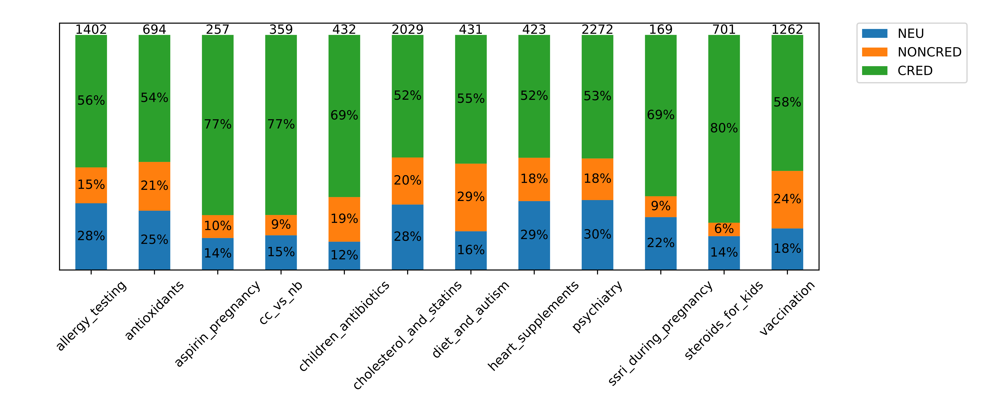
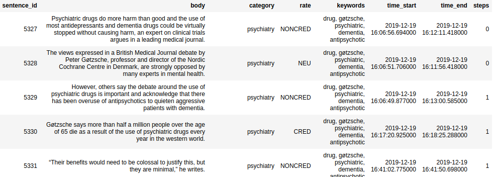

Dataset, as well as an access to the tagging tool, is available upon request. Please contact Aleksandra Nabożny (alenaboz@pg.edu.pl).
Credibility of the medical web content Dataset consists of over 10,000 sentences tagged by human experts (medical professionals).
Articles collected manually from various e-health websites were divided into individual sentences. Each sentence was tagged by an expert with the following set of labels:
- CRED (credible) - is reliable, does not raise major objections, contains verifiable information from the medical domain;
- NONCRED (not credible) - contains false or unverifiable information; contains persuasion contrary to current medical recommendations; contains outdated information;
- NEU (neutral) - does not contain information (eg. is a question); is not related to medicine;
The full dataset consists of some additional data:
- (time_start/time_end) Time of the assessment
- (steps) Width of the context window that was needed for the expert to assess one sentence (integer varying from 0 to 7, when 0 means that no additional context was needed, and 7 meant that 7 preceding and 7 following sentences from the original text were needed)
Dataset statistics:

Number above the bar is the number of sentences from within the given category. Percentages represent the disributions of labeles within given category.
Exemplary data:

The Dataset collection was funded by Polish Ministry of Higher Education and Polish-Japaneese Academy of Information Technology.